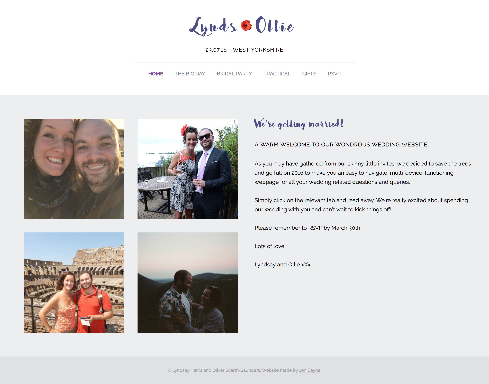
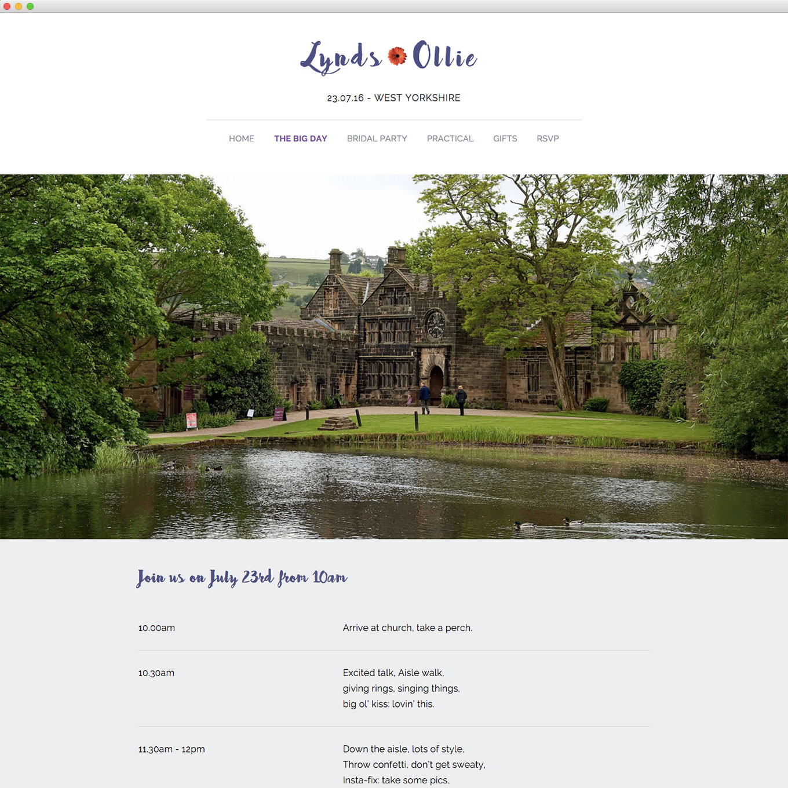
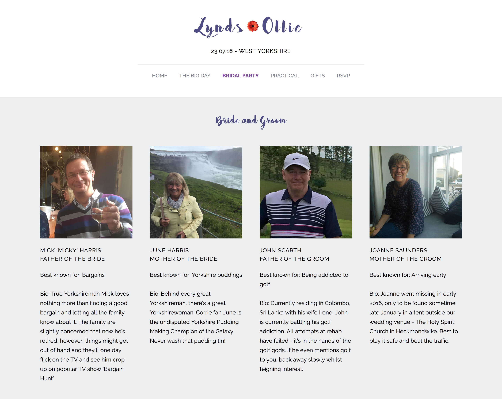
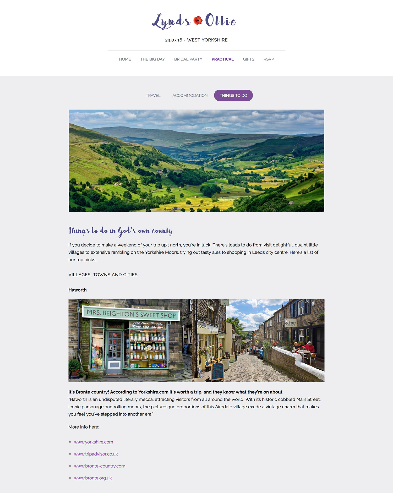
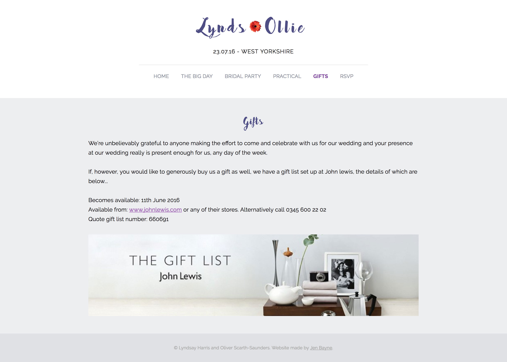
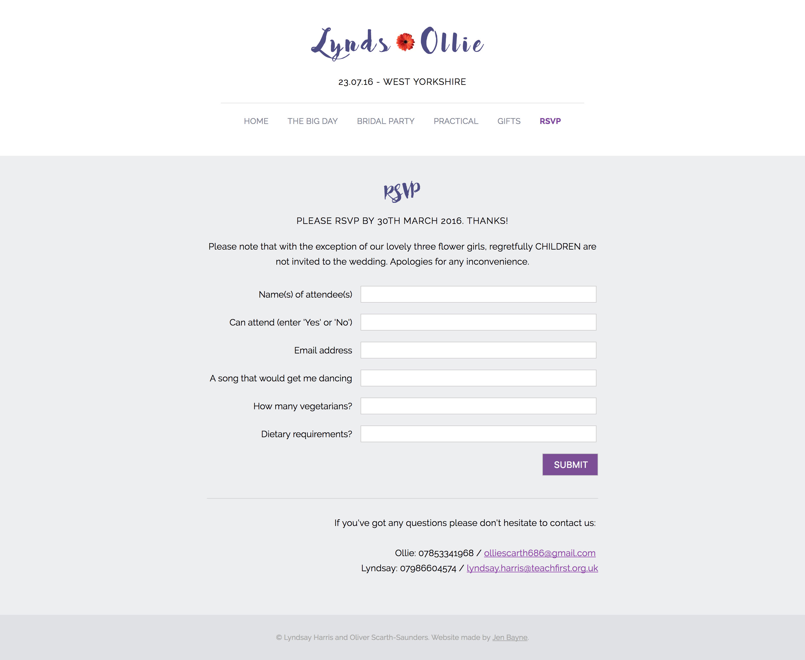
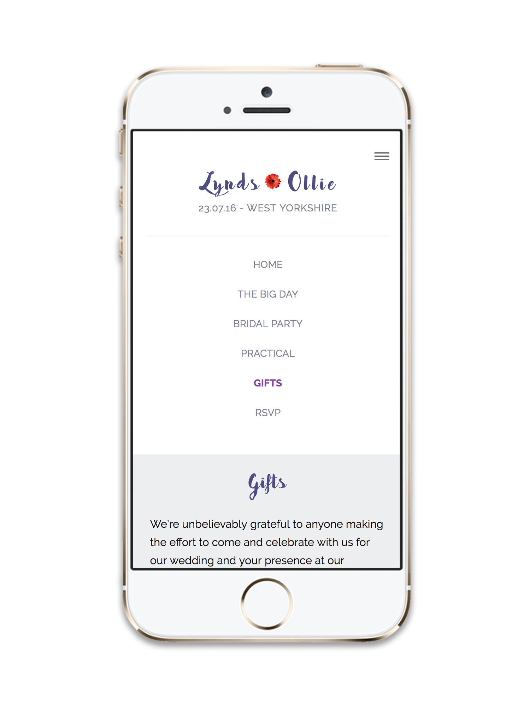

Lynds and Ollie: Wedding Website
UX, UI, HTML, CSS, Javascript, PHP
I was delighted to be asked to make a wedding website for two of my best friends. Built using html, css, javascript and php, this site allowed all invitees to RSVP to the wedding and find out everything they need to know about the big day. They wanted the design of the site to stand out from traditional wedding websites and reflect their fun loving personalities.







